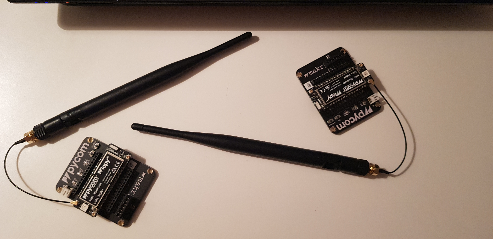

Desarrollado para pluging pymakr de Pycom para el módulo LoPy4. Repositorio para la práctica P6 de redes de sensores.
Commit . Realiza una comunicación Ping Pong entre dos módulos LoPy4, uno envía cada 4 segundos un Ping por puerto serie y comunicació LoRa. El otro envía un Pong por puerto serie. Además se realiza una secuencia de colores para indicar los cambios.

David Angosto Latorre, 633706